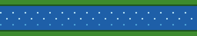

Infiltración
El agua que cae al suelo sigue uno de estos caminos:
- Se infiltra entre las rocas hasta formar acuíferos.
- Corre por la superficie como ríos hacia el mar.
- Es absorbida por las plantas y devuelta al aire al respirar.

Y así, el ciclo vuelve a empezar.
Has completado el recorrido. El agua que acaba de caer ya está comenzando un nuevo viaje hacia el cielo.